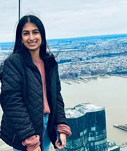

Our Mission
Providing Awareness Across South Florida
NeuroCare Network raises awareness about neurological disorders by uniting communities through acts of kindness and striving to build a supportive network for patients battling these conditions. Our mission is to make a positive impact on the lives of those affected by neurological disorders, contributing to a more compassionate and informed society.
Upcoming Events
| oct1 |
oct3 |
oct 2 |
| beep |
a a |
zoink |
Executives
Highschool students who aim to bring knowledge, awareness,
and provide an impact for children with neurological disorders
in their community
| Jiya Anand |
Preesha Zaveri |
Samara Murad |
| Co Founder & President |
Co Founder & President |
Vice President |
|
 |
|
| A Marjory Stoneman Douglas High school Junior with a strong interest in the medical field and community service. With a profound interest in neurology, she aspires to leave a lasting impact in this field. Eager to raise awareness about Autism Specturm Disorder (ASD). |
A Marjory Stoneman Douglas Junior who's dedicated to making a difference in her community inspired by her desire to create a positive change. She aims to address the lack of awareness about ASD and provide valuable information to support those impacted by autism. |
A Marjory Stoneman Douglas High School Sophomore who's deeply interested within the field of medicine and giving back to her community. Samara aims to make a lasting impact within South Florida and beyond. |
Check out our Instagram! @neurocarenetwork
Hospitals we partner with
contact us
neurocarenetwork@gmail.com
Website design by Natalia Dzielnicka